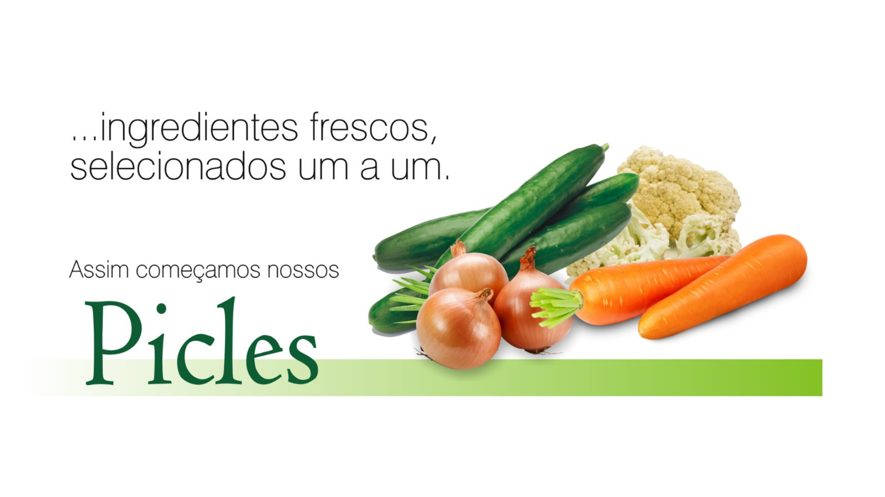

Nossa história
Bem-vindos à
Famiglia Tegon
Tradição artesanal herdada da Nonna Santa, com compromisso sério e qualidade em cada produto.
A Famiglia Tegon Temperos é uma empresa jovem, que tem como sua principal atividade a produção Artesanal, mas com grande conhecimento na área de alimentos, conhecimento esse, que herdamos de nossa Nonna Santa.
No dia-a-dia de nossa infância sempre fomos curiosos nas receitas que nossa Nonna fazia. E essa curiosidade fez com que anos depois nos aprofundássemos em recriar os quitutes e um arsenal de ideias trazidas por ela.
"Apesar de sermos uma empresa jovem no mercado, temos em nossos produtos, um trabalho sério, profissional e com qualidade ímpar."
Nossos produtos vêm diretamente de produtores rurais, que carinhosamente, chamamos de nossos parceiros da "Roça". Pois foi através da Roça que conquistamos nossos conhecimentos. E assim com profissionais comprometidos com a qualidade dos nossos produtos, conseguimos ter a satisfação de nossos consumidores.
Atualmente atuamos exclusivamente no mercado de conservas, e já preparando área de temperos secos. Os ingredientes utilizados na fabricação dos nossos produtos, antes de ser envasados, passam por um rígido processo de seleção e controle interno de qualidade.
Todos esses cuidados garantem a segurança e a satisfação de parceiros, clientes e consumidores. Assim é um pouquinho de nossa história, pois com esse tempero tudo fica mais gostoso!

Produção Artesanal
Qualidade herdada de geração em geração.
Nossos valores
O que nos move
Tradição Familiar
Receitas autênticas que preservam o verdadeiro sabor caseiro da Nonna Santa.
Qualidade Premium
Processos artesanais com rigoroso controle de higiene e sabor em cada etapa.
Parceria com a Roça
Ingredientes direto de produtores rurais comprometidos com origem e frescor.